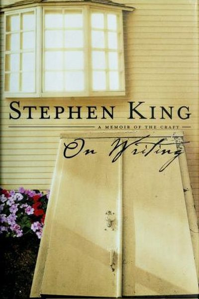

Library › Creativity
On Writing — Summary & Key Lessons

Half memoir, half masterclass — the most beloved writing book ever, from the man who sold 400 million books.
📖 OPEN THE FULL INTERACTIVE BREAKDOWN →🌐 Read it in Hindi, Hinglish, Gujarati, Tamil & 22 more languages — free, with audio.
💡 The Big Idea
Stephen King's On Writing is part memoir of a life built on words and part the most practical craft manual ever written. His core creed: talent is cheap, but the door to the room where it lives is marked 'Do the work.' Write every day, read constantly, cut your darling adverbs, and remember that writing is telepathy — your job is to transmit the movie in your head into the reader's, one honest sentence at a time. No muse required; the muse shows up for people who are already at their desks.
🧠 The 5 Key Lessons
Lesson 1: Read a Lot, Write a Lot
Toolbox
King's first rule is almost insultingly simple: you become a writer by reading and writing constantly. Reading is the creative center of a writer's life — it shows you what's possible, fills your toolbox, and teaches you rhythm without you noticing. Write every day, not when 'inspiration' strikes; the schedule is the muse.
📖 Example: King read six books a week as a kid — comics, sci-fi, 'junk' — and wrote stories from age seven. When his writing career seemed dead in the 1970s, he kept writing at a laundry-room desk in the evenings after teaching all day; that's where Carrie, his… Read the full example →
⚡ Do this: Pick a daily word count (King's was 2,000; start with 300) and a daily reading slot. Same time, same place, every day — including bad days.
Lesson 2: The Toolbox: Vocabulary, Grammar, Style
Toolbox
Writing needs tools, and King says you should carry them in layers: vocabulary at the top (use the first word that's right — no thesaurus showing off), then grammar (learn it so you can break it on purpose), then style, which is simply the honest expression of who you are. The toolbox is built by reading and practicing, not by courses.
📖 Example: King's famous example: 'He closed the door firmly' vs. 'He closed the door.' The adverb adds nothing, so it dies. Great style is invisible — it disappears into the story, which is why King compares good prose to a windowpane. Read the full example →
⚡ Do this: Take your last piece of writing and delete every adverb. Read it again. Keep only the ones that genuinely change meaning.
Lesson 3: Write the Draft With the Door Closed
First Draft
First drafts are for you alone — write with the door closed, no one reading, no one judging. This is where you discover your story and make the mess. Then rewrite with the door open: the second draft is where you serve the reader. King's formula: first draft = speed and freedom; second draft = 10% shorter and ruthlessly clarified.
📖 Example: Carrie began as a short story King threw away in disgust — his wife fished the pages out of the bin and told him to continue. The door-closed mess became one of the best-selling horror novels of all time. Read the full example →
⚡ Do this: Write your next draft without showing anyone, then cut it by 10% before anyone sees it. Judge only after the cut.
Lesson 4: Kill Your Darlings (and Your Adverbs)
Craft
King's surgical rules: cut the parts people skip; kill your darling sentences that are clever but useless; and treat adverbs like weeds — one in a hundred is a flower. Show don't tell, describe the concrete (smell, texture, gesture), and let readers feel smart by leaving some things unstated.
📖 Example: King offers the classic: 'Ralph was a heavy drinker' (tells) vs. showing Ralph's hands trembling over the coffee cup at 7 AM (shows). One line does what paragraphs of telling can't. Read the full example →
⚡ Do this: Find one sentence you're in love with that doesn't serve the story — delete it. Then replace one 'telling' summary with a concrete scene.
Lesson 5: Telepathy: Get the Picture Across
What Writing Is
Writing is telepathy: a transmitter (you) and a receiver (reader), with nothing but marks on paper between them. The writer's job is to get the movie in their head into the reader's head with as little loss as possible. This is why clarity beats cleverness, and honesty beats polish — the reader must see what you see.
📖 Example: King demonstrates with a scene of a girl in a blue dress — by the end of one paragraph the reader 'sees' her too, even though she exists only as ink. Every writer does this trick; the masters do it without the reader noticing. Read the full example →
⚡ Do this: Write one paragraph describing a moment you remember vividly, then hand it to someone. Ask them what they 'saw' — compare it to what you saw.
✅ 5-Step Action Plan
- Set a daily word count and a daily reading habit — protect both.
- Delete every adverb from your latest draft.
- Write the next draft with the door closed; cut 10% before sharing.
- Kill one darling sentence that doesn't serve the story.
- Test your telepathy: write a vivid scene, have someone describe what they saw.
⚠️ When This Doesn't Work
Stephen King's 'write every day, tell the truth' is the finest writing book ever — and the Beatles' story is the cautionary tail: the greatest creative partnership in history wrote, recorded and shipped relentlessly — and then trusted the wrong manager, Allen Klein, and watched their finances, their friendship and their catalog get devoured by someone who was excellent at one thing: taking. King's book teaches the craft beautifully; the craft of protecting what you create is a separate book, and the Beatles prove it needs writing.
💀 The Graveyard Proves It
🎶 The Beatles — The Manager Who Managed Them Apart. Burn: The band itself. Read the full case study →
💬 Best Quotes from On Writing
- “If you want to be a writer, you must do two things above all others: read a lot and write a lot.”
- “The road to hell is paved with adverbs.”
- “Writing is refined thinking.”
Interactive version: mark lessons as read, listen in your language, share quote cards.